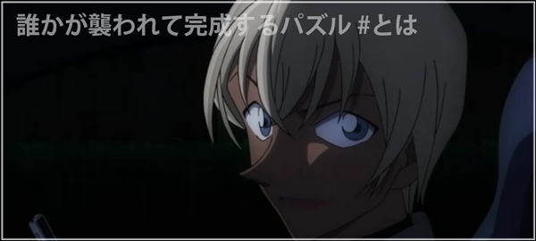
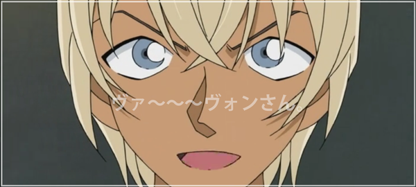

緋色の序章
病院での事件解決後、安室は高木に”楠田陸道”という男について尋ね、以前この付近で見つかった破損車両の持ち主であること、
その車内で大量の血液…また1mmにも満たない血痕も見つかっている、という返答から拳銃が使われていたと推理。
教師仲間であり親友である澁谷夏子と飲みの約束をしていたジョディは、携帯の電池切れのためキャメルに借りた携帯で
夏子に電話を掛けるも、「この後児童の保護者と会う約束がある」と、あえなく中止に。
ベルモットを乗せた車で夏子を待っているという安室。彼にとって夏子は
「探し求めている最後のピースを埋める手助けをしてくれそうな人物」だという。
その時、誰かが階段から突き落とされる瞬間を目撃。確認してみると、そこには倒れた夏子の姿が…。
「どうやらパズルは完成しそうですよ…」
翌日の放課後、ジョディを呼び出したコナンは「組織の一員であるバーボン…安室透が探りを入れてきているから、
楠田が拳銃自殺した事を外部に絶対に漏らさないで」と釘を刺す。
安室の正体について思案するコナンだが、ジョディの携帯に着信が入る。
その内容は「夏子が杯戸公園の階段から突き落とされ重体、昨晩通話履歴があったため現場に来てほしい」とのこと。
現場に着き、目暮、高木、そしてジョディに携帯を貸していたキャメルと合流。
採点済みのテストの解答用紙が発見されたことから先生らしいことはわかった、と言う高木に
「すべて採点済みなら解答用紙は持ち帰らない、つまり夏子は学校で襲われた」とコナンが助言し、
昨晩、夏子が会う約束をしていた保護者に話を聞くことに…。
学校に残って用具室で用具の整理をしていた体育教師の菅本、
露出の多い服で息子を誘惑するなと忠告をしに来た植野、
娘の字が汚いせいで不正解にされたと文句を言いに来たが会えずじまいだった神立 …の3人が重要人物とされた。
そして神立は「妙な探偵まで雇いやがって…」と零す。すると…
「仕方ありませんよ…僕は彼女から、ストーカー被害の依頼を受けていたんですから…」
FBIを煽りまくる安室。コナンが「もう一度、ちゃんとお話聞いてみようよ‼」とその場をおさめ、犯人捜しが始まる…―――。